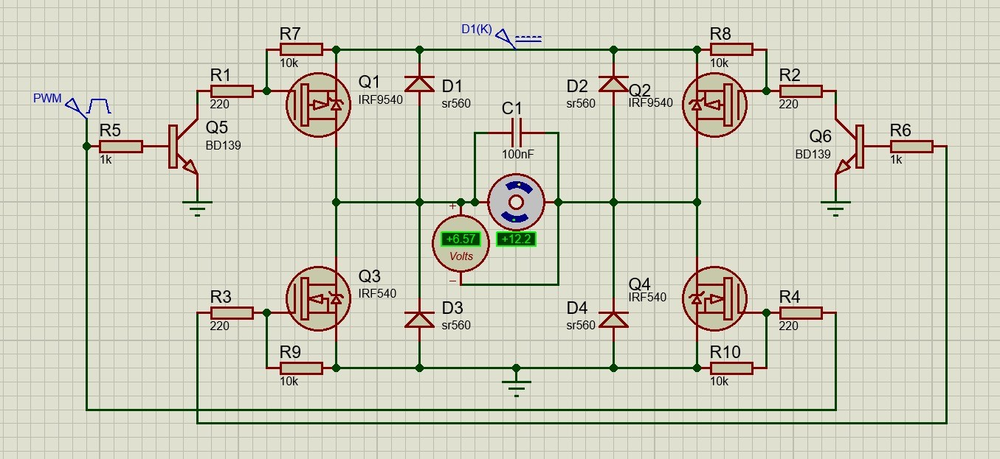

01
Closed-Loop DC Motor Speed Control
A full H-bridge built from discrete parts — four MOSFETs (IRF9540 P-channel, IRF540N N-channel) with BD139 gate drivers, freewheeling diodes and a snubber capacitor. ESP32 firmware running 20 kHz PWM and 4× quadrature encoder decoding through dual-channel interrupt service routines, giving 880 effective pulses per revolution.
- 58%noise cut, filter moved into firmware
- 12.78RPM RMSE across two ID methods
- 0.11%steady-state error on hardware
- ESP32
- C/C++
- Power electronics
- MATLAB
- Simulink